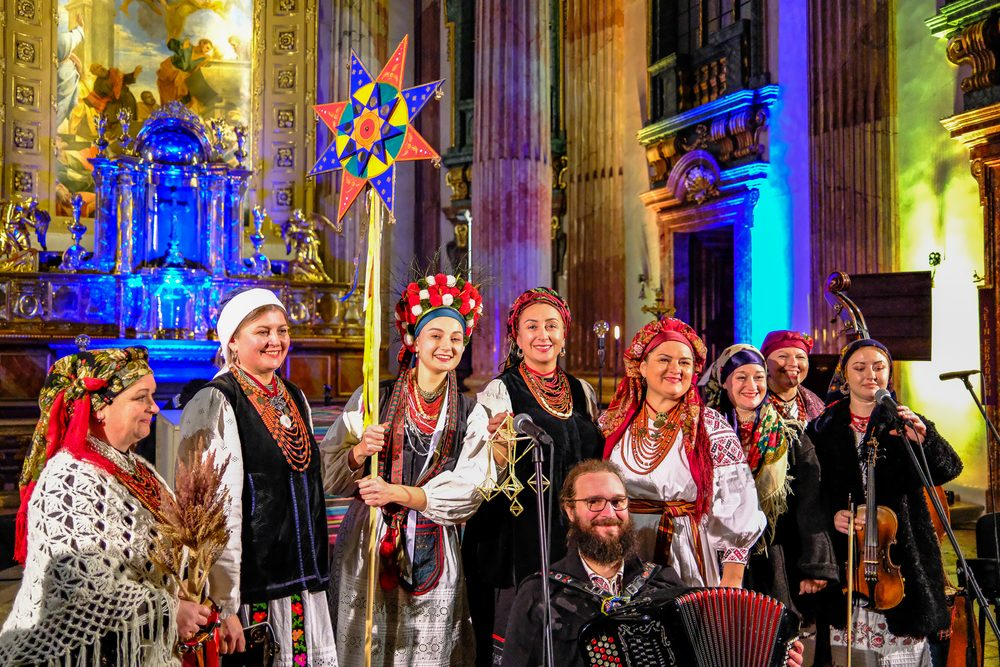
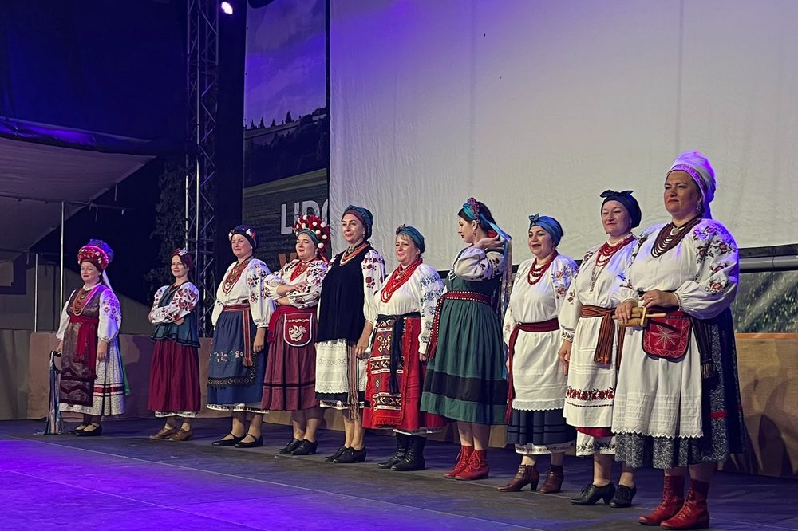
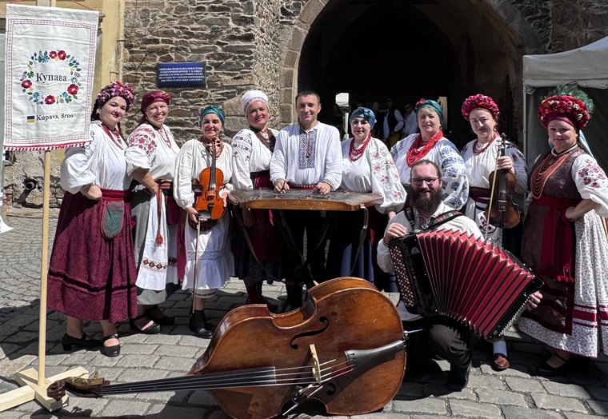
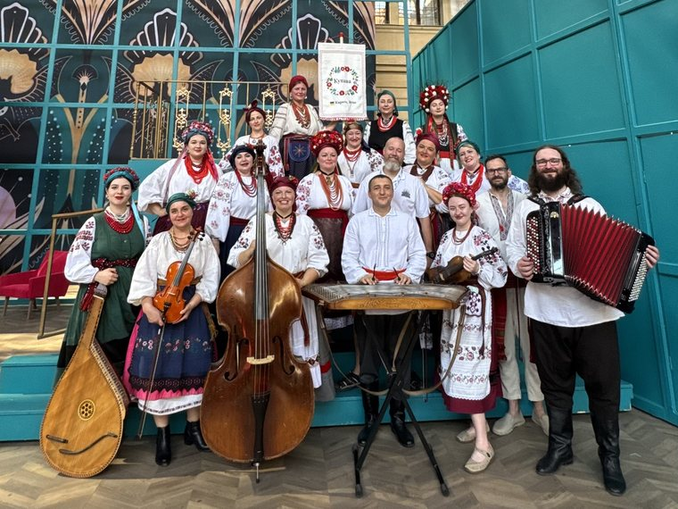
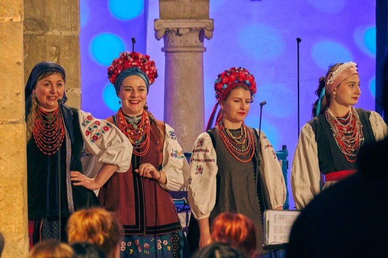
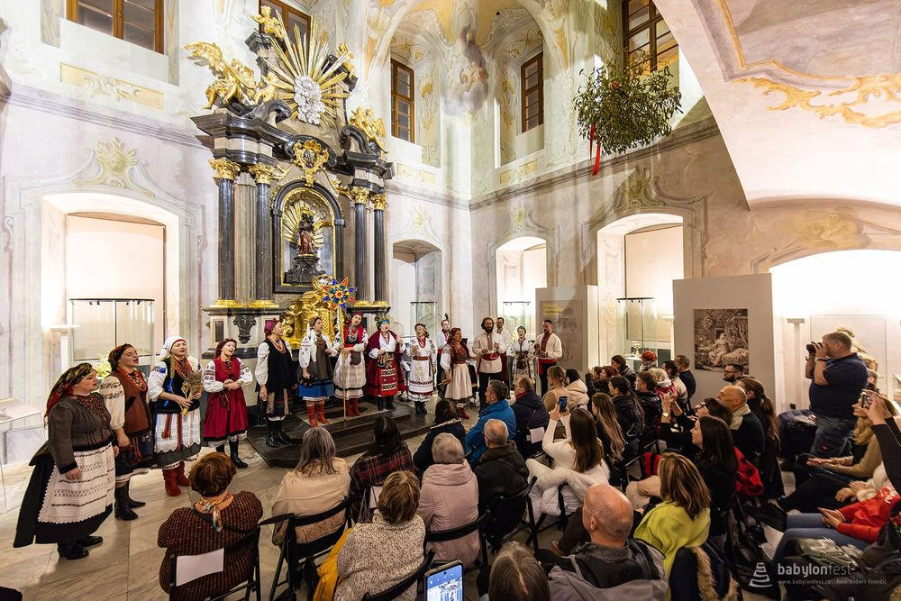

Aktuality
Z našeho dění

Staroukrajinské Vánoce u Jošta 2026
V sobotu 5. prosince 2026 zazpívá Kupava staroukrajinské koledy a ščedrivky na Moravském náměstí v Brně.
Číst dál →
Kupava na Mezinárodním folklorním festivalu Lidový rok
Kupava vystoupila 5. září 2026 na Mezinárodním folklorním festivalu Lidový rok ve Velké Bystřici.
Číst dál →
Kupava na Chodských slavnostech v Domažlicích
Ve dnech 15. a 16. srpna 2026 vystoupila Kupava na Chodských slavnostech v Domažlicích.
Číst dál →
Kupava na festivalu Smetanova Litomyšl
Kupava vystoupila 27. června 2026 v programu Festivalové zahrady na festivalu Smetanova Litomyšl.
Číst dál →
Koncert pro život II v přímém přenosu TV Noe
Kupava vystoupila 6. dubna 2025 v kostele sv. Václava v Ostravě na benefičním Koncertu pro život II, který živě vysílala TV Noe.
Číst dál →
Vánoční koncert národnostních menšin v Paláci šlechtičen
Kupava vystoupila 10. prosince 2024 na vánočním koncertu Asociace Babylon v kapli Paláce šlechtičen v Brně.
Číst dál →